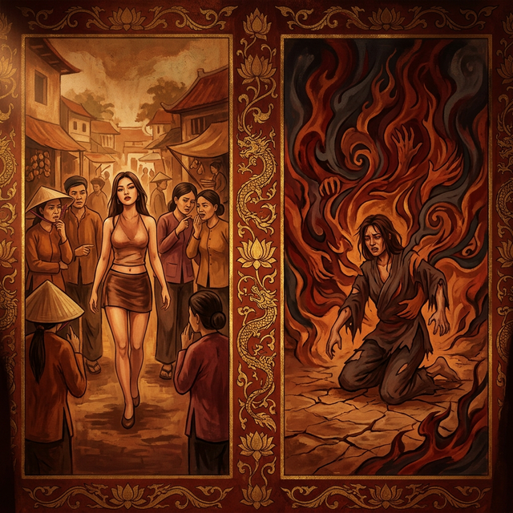
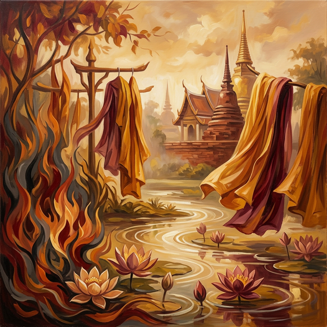

El Fuego del ExhibicionismoThe Fire of ExhibitionismIl Fuoco dell'Esibizionismo裸露之火نار الاستعراضОгонь эксгибиционизмаDas Feuer des ExhibitionismusLe Feu de l'Exhibitionnisme露出の炎O Fogo do ExibicionismoNgọn Lửa Phô Bày
Quien exhibe su cuerpo sin pudor enciende en su alma las llamas de un deseo que jamás se sacia. Whoever exhibits their body without modesty ignites in their soul flames of desire that are never satisfied. Kẻ phô bày thân thể không biết xấu hổ thắp lên trong linh hồn ngọn lửa dục vọng không bao giờ được thỏa mãn. Wer seinen Körper schamlos zur Schau stellt, entzündet in seiner Seele Flammen der Begierde, die nie gestillt werden. Кто выставляет своё тело без стыда, зажигает в душе пламя желания, которое никогда не утолится. Celui qui exhibe son corps sans pudeur allume dans son âme des flammes de désir qui ne sont jamais assouvies. Chi esibisce il proprio corpo senza pudore accende nella propria anima fiamme di desiderio che non si estinguono mai. Quem exibe o corpo sem pudor acende na alma chamas de desejo que jamais se saciam. 恥じらいなく身体をさらす者は、魂の中に決して満たされない欲望の炎を灯す。 毫无羞耻地展示身体者，在灵魂中点燃永不满足的欲望之火。 من يعرض جسده بلا حياء يشعل في نفسه نيران رغبة لا تُشبع أبداً.
Entre los actos que el cielo registra con especial atención figura la exhibición impúdica del cuerpo. Quien se despoja de las vestiduras de la modestia para provocar la mirada ajena siembra en el jardín cósmico una semilla de fuego que arderá en su propia carne en la existencia siguiente...
Cada gesto calculado para atraer la atención carnal de otros, cada prenda eliminada con el propósito de inflamar deseos ajenos, se inscribe en el libro del karma como una deuda de llamas. La energía de la provocación no se disipa en el aire: se acumula como brasas que aguardan pacientemente su hora de retorno.
La ley universal establece con precisión milimétrica que quien enciende deliberadamente el deseo de otros mediante la exhibición de su cuerpo renacerá consumido por una lujuria insaciable, un fuego interno que ningún placer puede extinguir, una sed que crece cuanto más se intenta calmar.
Among the acts that heaven records with particular attention is the immodest exhibition of the body. Whoever strips away the garments of modesty to provoke the gaze of others sows in the cosmic garden a seed of fire that will burn in their own flesh in the next existence...
Every gesture calculated to attract the carnal attention of others, every garment removed with the purpose of inflaming others' desires, is inscribed in the book of karma as a debt of flames. The energy of provocation does not dissipate into the air: it accumulates like embers that patiently await their hour of return.
Universal law establishes with millimetric precision that whoever deliberately ignites the desire of others through the exhibition of their body will be reborn consumed by insatiable lust, an internal fire that no pleasure can extinguish, a thirst that grows the more one tries to quench it.
Tra gli atti che il cielo registra con particolare attenzione figura l'esibizione impudica del corpo. Chi si spoglia delle vesti della modestia per provocare lo sguardo altrui semina nel giardino cosmico un seme di fuoco che brucerà nella propria carne nell'esistenza successiva...
Ogni gesto calcolato per attirare l'attenzione carnale altrui, ogni indumento eliminato con lo scopo di infiammare i desideri altrui, viene iscritto nel libro del karma come un debito di fiamme. L'energia della provocazione non si dissipa nell'aria: si accumula come braci che attendono pazientemente la loro ora di ritorno.
La legge universale stabilisce con precisione millimetrica che chi accende deliberatamente il desiderio altrui mediante l'esibizione del proprio corpo rinascerà consumato da una lussuria insaziabile, un fuoco interno che nessun piacere può estinguere, una sete che cresce quanto più si tenta di placarla.
在天堂特别留意记录的行为中，有一种是不知羞耻地展露身体。凡是脱去谦逊的衣裳以引诱他人目光者，就在宇宙花园中播下一颗火种，它将在来世燃烧自己的肉身……
每一个精心计算以引人肉欲的动作，每一件为激起他人欲望而褪去的衣裳，都以火焰之债的形式被记录在业力之书中。挑逗的能量不会消散于空气中：它如余烬般积聚，耐心地等待归来之时。
宇宙法则以毫厘不差的精确度规定：凡通过暴露身体蓄意点燃他人欲望者，来世必将被无法满足的淫欲所吞噬，一团任何快感都无法扑灭的内火，一种越试图平息就越发增长的渴望。
من بين الأفعال التي يسجلها السماء باهتمام خاص، عرض الجسد بلا حياء. من يخلع ثياب الحشمة لاستفزاز نظرات الآخرين يزرع في الحديقة الكونية بذرة نارية ستحرق لحمه في الوجود التالي...
كل حركة محسوبة لجذب الانتباه الجسدي للآخرين، كل ثوب يُنزع بغرض إشعال رغبات الآخرين، يُسجل في كتاب الكرمة كدَيْن من اللهب. طاقة الاستفزاز لا تتبدد في الهواء: بل تتراكم كجمرات تنتظر بصبر ساعة عودتها.
يقرر القانون الكوني بدقة متناهية أن من يشعل عمداً رغبة الآخرين عبر عرض جسده سيولد من جديد مستهلكاً بشهوة لا تُشبع، ناراً داخلية لا يمكن لأي متعة إطفاؤها، عطشاً يزداد كلما حاول إرواءه.
Среди поступков, которые небеса фиксируют с особым вниманием, — бесстыдная демонстрация тела. Кто сбрасывает одежды скромности, чтобы провоцировать чужие взгляды, сеет в космическом саду семя огня, которое сожжёт его собственную плоть в следующем существовании...
Каждый жест, рассчитанный на привлечение плотского внимания других, каждая одежда, снятая с целью разжечь чужие желания, записывается в книге кармы как долг пламени. Энергия провокации не рассеивается в воздухе: она накапливается, как угли, терпеливо ожидающие своего часа возврата.
Вселенский закон устанавливает с миллиметрической точностью: кто намеренно разжигает желание других через демонстрацию своего тела, переродится поглощённым ненасытной похотью, внутренним огнём, который никакое наслаждение не может погасить, жаждой, которая растёт тем больше, чем сильнее её пытаются утолить.
Unter den Taten, die der Himmel mit besonderer Aufmerksamkeit verzeichnet, steht die schamlose Zurschaustellung des Körpers. Wer die Gewänder der Bescheidenheit ablegt, um die Blicke anderer zu provozieren, sät im kosmischen Garten einen Samen aus Feuer, der im nächsten Dasein im eigenen Fleisch brennen wird...
Jede kalkulierte Geste, um die fleischliche Aufmerksamkeit anderer auf sich zu ziehen, jedes Kleidungsstück, das mit dem Ziel abgelegt wird, fremde Begierden zu entflammen, wird im Buch des Karmas als Feuerschuld verzeichnet. Die Energie der Provokation löst sich nicht in der Luft auf: sie sammelt sich wie Glut, die geduldig ihre Stunde der Rückkehr abwartet.
Das universelle Gesetz legt mit millimetergenauer Präzision fest, dass wer absichtlich die Begierde anderer durch die Zurschaustellung seines Körpers entfacht, wiedergeboren wird, verzehrt von unersättlicher Lust, einem inneren Feuer, das kein Vergnügen löschen kann, einem Durst, der umso mehr wächst, je mehr man ihn zu stillen versucht.
Parmi les actes que le ciel enregistre avec une attention particulière figure l'exhibition impudique du corps. Quiconque se dépouille des vêtements de la pudeur pour provoquer le regard d'autrui sème dans le jardin cosmique une graine de feu qui brûlera dans sa propre chair lors de l'existence suivante...
Chaque geste calculé pour attirer l'attention charnelle d'autrui, chaque vêtement ôté dans le but d'enflammer les désirs des autres, s'inscrit dans le livre du karma comme une dette de flammes. L'énergie de la provocation ne se dissipe pas dans l'air : elle s'accumule comme des braises qui attendent patiemment leur heure de retour.
La loi universelle établit avec une précision millimétrique que quiconque allume délibérément le désir d'autrui par l'exhibition de son corps renaîtra consumé par une luxure insatiable, un feu intérieur qu'aucun plaisir ne peut éteindre, une soif qui grandit d'autant plus qu'on tente de l'assouvir.
天が特に注意を払って記録する行為の中に、身体の恥知らずな露出があります。慎みの衣を脱ぎ捨てて他者の視線を挑発する者は、宇宙の庭に火の種を蒔き、それは来世で自らの肉体を焼くことになるのです……
他者の肉欲を引くために計算された仕草の一つ一つ、他者の欲望を燃え立たせる目的で脱がれた衣服の一枚一枚が、カルマの書に炎の負債として記されます。挑発のエネルギーは空中に消え去ることはありません――それは帰還の時を辛抱強く待つ残り火のように蓄積されるのです。
宇宙の法則はミリ単位の精密さで定めています：身体の露出によって意図的に他者の欲望を燃え上がらせる者は、飽くなき肉欲に蝕まれて生まれ変わる——いかなる快楽も消し得ない内なる炎、鎮めようとすればするほど燃え盛る渇きとともに。
Entre os atos que o céu registra com especial atenção figura a exibição impudica do corpo. Quem se despoja das vestes da modéstia para provocar o olhar alheio semeia no jardim cósmico uma semente de fogo que arderá na própria carne na existência seguinte...
Cada gesto calculado para atrair a atenção carnal alheia, cada peça de roupa eliminada com o propósito de inflamar desejos alheios, inscreve-se no livro do carma como uma dívida de chamas. A energia da provocação não se dissipa no ar: acumula-se como brasas que aguardam pacientemente sua hora de retorno.
A lei universal estabelece com precisão milimétrica que quem acende deliberadamente o desejo alheio mediante a exibição do corpo renascerá consumido por uma luxúria insaciável, um fogo interno que nenhum prazer pode extinguir, uma sede que cresce quanto mais se tenta saciar.
Trong số các hành vi mà thiên đường ghi nhận với sự chú ý đặc biệt có việc phô bày thân thể một cách thiếu liêm sỉ. Kẻ nào cởi bỏ tấm áo khiêm nhường để khiêu khích ánh nhìn của người khác là gieo trong vườn vũ trụ một hạt giống lửa sẽ cháy trong chính da thịt kẻ đó ở kiếp sau...
Mỗi cử chỉ tính toán để thu hút sự chú ý nhục dục của người khác, mỗi bộ trang phục bị lột bỏ với mục đích đốt cháy dục vọng của người khác, được ghi vào sổ nghiệp như một món nợ bằng lửa. Năng lượng khiêu khích không tan biến trong không khí: nó tích tụ như than hồng kiên nhẫn chờ đợi giờ phút quay trở lại.
Luật phổ quát quy định với độ chính xác tuyệt đối rằng kẻ nào cố tình đốt cháy dục vọng của người khác bằng cách phô bày thân thể sẽ tái sinh bị thiêu đốt bởi sắc dục không thể thỏa mãn, một ngọn lửa bên trong mà không khoái lạc nào có thể dập tắt, một cơn khát càng cố dập tắt lại càng bùng lên.
La Danzarina del Mercado
The Market Dancer
La Danzatrice del Mercato
市场舞女
راقصة السوق
Танцовщица рынка
Die Markttänzerin
La Danseuse du Marché
市場の踊り子
A Dançarina do Mercado
Vũ Nữ Chợ Phiên
Una joven de belleza deslumbrante, hija de un comerciante acomodado, descubrió que podía obtener favores, regalos y poder con solo desvestir su cuerpo ante las miradas hambrientas de los hombres del mercado. Cada atardecer se despojaba de sus ropajes bordados y danzaba semidesnuda entre los puestos, provocando suspiros, peleas y la destrucción de hogares completos...
Lo que ella consideraba su mayor virtud —el poder de encender el deseo ajeno— era en realidad la mecha que prendió el incendio de su propio destino. Porque cada llama que avivó en los ojos de otros se registraba con exactitud en el libro celeste como carbón destinado a su propia hoguera.
En su siguiente vida nació con una hermosura aún mayor, pero atormentada por un deseo carnal tan abrasador que ningún abrazo la calmaba, ningún placer la satisfacía. Vagaba de amor en amor como una mariposa que vuela hacia la llama, sin comprender que el fuego que la quemaba era exactamente el mismo que ella había encendido en otros.
A young woman of dazzling beauty, daughter of a wealthy merchant, discovered she could obtain favors, gifts and power by simply undressing before the hungry gazes of the market men. Each evening she shed her embroidered garments and danced half-naked among the stalls, provoking sighs, fights and the destruction of entire homes...
What she considered her greatest virtue — the power to ignite others' desire — was actually the wick that lit the fire of her own destiny. For every flame she fanned in others' eyes was recorded with precision in the celestial book as coal destined for her own pyre.
In her next life she was born with even greater beauty, but tormented by a carnal desire so scorching that no embrace could calm her, no pleasure could satisfy her. She wandered from love to love like a moth flying toward the flame, never understanding that the fire burning her was exactly the same one she had lit in others.
Una giovane di bellezza abbagliante, figlia di un ricco commerciante, scoprì che poteva ottenere favori, regali e potere semplicemente svestendosi davanti agli sguardi avidi degli uomini del mercato. Ogni sera si spogliava delle sue vesti ricamate e danzava seminuda tra le bancarelle, provocando sospiri, risse e la distruzione di interi focolari...
Ciò che lei considerava la sua più grande virtù — il potere di accendere il desiderio altrui — era in realtà lo stoppino che diede fuoco al suo stesso destino. Perché ogni fiamma alimentata negli occhi altrui veniva registrata con esattezza nel libro celeste come carbone destinato al suo stesso rogo.
Nella vita successiva nacque con una bellezza ancora maggiore, ma tormentata da un desiderio carnale così bruciante che nessun abbraccio la calmava, nessun piacere la soddisfaceva. Vagava di amore in amore come una falena che vola verso la fiamma, senza mai comprendere che il fuoco che la bruciava era esattamente lo stesso che lei aveva acceso negli altri.
一个美貌惊人的年轻女子，是一位富商的女儿，发现只需在市场上那些饥渴的男人目光前脱去衣衫，便能获得恩惠、礼物和权力。每到傍晚，她便脱下绣花衣裳，半裸着在摊位间起舞，引来叹息、争斗和无数家庭的破碎……
她认为自己最大的美德——点燃他人欲望的力量——实际上正是引燃自己命运大火的引线。因为她在他人眼中煽起的每一缕火焰，都被精确地记录在天书上，化作注定燃烧她自己的炭火。
来世她以更加绝世的容貌降生，却被灼热的肉欲所折磨——没有拥抱能让她平静，没有快乐能让她满足。她像飞蛾扑火般从一段爱情游荡到另一段，始终不明白灼伤她的火焰正是她曾在他人心中点燃的那团火。
شابة ذات جمال أخاذ، ابنة تاجر ثري، اكتشفت أنها تستطيع الحصول على الخدمات والهدايا والسلطة بمجرد خلع ملابسها أمام النظرات الجائعة لرجال السوق. كل مساء كانت تخلع ثيابها المطرزة وترقص شبه عارية بين البسطات، مثيرة التنهدات والمشاجرات وتدمير بيوت بأكملها...
ما اعتبرته فضيلتها الكبرى — قدرتها على إشعال رغبة الآخرين — كان في الحقيقة الفتيل الذي أشعل نار مصيرها. فكل لهيب أوقدته في عيون الآخرين سُجل بدقة في الكتاب السماوي كفحم مُعد لمحرقتها هي.
في حياتها التالية وُلدت بجمال أعظم، لكنها عُذبت برغبة جسدية حارقة لم يهدئها أي عناق ولم يُشبعها أي لذة. تاهت من حب إلى حب كفراشة تطير نحو اللهب، دون أن تفهم أبداً أن النار التي تحرقها هي ذاتها التي أوقدتها في الآخرين.
Юная красавица ослепительной внешности, дочь зажиточного торговца, обнаружила, что может получать услуги, подарки и власть, просто обнажая своё тело перед жадными взглядами рыночных мужчин. Каждый вечер она сбрасывала вышитые одежды и полуобнажённой танцевала среди прилавков, вызывая вздохи, драки и разрушение целых семей...
То, что она считала своим главным достоинством — способность разжигать чужое желание — на деле было фитилём, от которого загорелся огонь её собственной судьбы. Ибо каждое пламя, раздутое в чужих глазах, с точностью заносилось в небесную книгу как уголь, предназначенный для её собственного костра.
В следующей жизни она родилась с ещё большей красотой, но мучимая плотским желанием столь обжигающим, что ни одни объятия не могли её успокоить, ни одно наслаждение — удовлетворить. Она скиталась от любви к любви, как мотылёк, летящий на пламя, так и не поняв, что огонь, сжигавший её, был тем самым, который она зажгла в других.
Eine junge Frau von blendender Schönheit, Tochter eines wohlhabenden Kaufmanns, entdeckte, dass sie Gefälligkeiten, Geschenke und Macht erlangen konnte, indem sie sich vor den hungrigen Blicken der Marktmänner entkleidete. Jeden Abend legte sie ihre bestickten Gewänder ab und tanzte halbnackt zwischen den Ständen, wobei sie Seufzer, Kämpfe und die Zerstörung ganzer Haushalte auslöste...
Was sie als ihre größte Tugend betrachtete — die Macht, die Begierde anderer zu entfachen — war tatsächlich der Docht, der das Feuer ihres eigenen Schicksals entzündete. Denn jede Flamme, die sie in den Augen anderer anfachte, wurde mit Präzision im himmlischen Buch als Kohle verzeichnet, die für ihren eigenen Scheiterhaufen bestimmt war.
Im nächsten Leben wurde sie mit noch größerer Schönheit geboren, aber gequält von einer fleischlichen Begierde, die so brennend war, dass keine Umarmung sie beruhigen konnte, kein Vergnügen sie zufriedenstellen konnte. Sie wanderte von Liebe zu Liebe wie ein Falter, der zur Flamme fliegt, ohne je zu verstehen, dass das Feuer, das sie verbrannte, genau dasselbe war, das sie in anderen entzündet hatte.
Une jeune femme d'une beauté éblouissante, fille d'un marchand aisé, découvrit qu'elle pouvait obtenir faveurs, cadeaux et pouvoir en se dévêtant simplement devant les regards affamés des hommes du marché. Chaque soir, elle se dépouillait de ses vêtements brodés et dansait à demi nue parmi les étals, provoquant soupirs, bagarres et la destruction de foyers entiers...
Ce qu'elle considérait comme sa plus grande vertu — le pouvoir d'allumer le désir d'autrui — était en réalité la mèche qui mit le feu à son propre destin. Car chaque flamme qu'elle attisait dans les yeux des autres était enregistrée avec précision dans le livre céleste comme du charbon destiné à son propre bûcher.
Dans sa vie suivante, elle naquit avec une beauté encore plus grande, mais tourmentée par un désir charnel si brûlant qu'aucune étreinte ne la calmait, aucun plaisir ne la satisfaisait. Elle errait d'amour en amour comme un papillon volant vers la flamme, sans jamais comprendre que le feu qui la brûlait était exactement celui qu'elle avait allumé chez les autres.
目もくらむほどの美貌を持つ若い女性は、裕福な商人の娘だった。市場の男たちの飢えた視線の前で身体をさらすだけで、好意や贈り物や権力を手に入れられることに気づいた。毎夕、刺繍の衣を脱ぎ捨て、屋台の間を半裸で踊り、溜息や喧嘩、幾つもの家庭の崩壊を引き起こした……
彼女が最大の美徳と考えていたもの——他者の欲望に火を点ける力——は、実は自分自身の運命の大火に火をつける導火線だった。なぜなら、他者の目に煽った炎の一つ一つが、天上の書に自らの火刑台のための炭として正確に記録されていたからだ。
次の人生で彼女はさらに大きな美しさをもって生まれたが、どんな抱擁も鎮められず、どんな快楽も満たせないほど焼けつくような肉欲に苛まれた。炎に向かって飛ぶ蛾のように愛から愛へとさまよい続け、自分を焼いている火がまさに自分が他者の中に灯したものだとは、ついに理解することがなかった。
Uma jovem de beleza deslumbrante, filha de um comerciante abastado, descobriu que podia obter favores, presentes e poder simplesmente despindo-se diante dos olhares famintos dos homens do mercado. Cada entardecer despojava-se de suas roupas bordadas e dançava seminua entre as bancas, provocando suspiros, brigas e a destruição de lares inteiros...
O que ela considerava sua maior virtude — o poder de acender o desejo alheio — era na verdade o pavio que incendiou seu próprio destino. Pois cada chama que atiçou nos olhos alheios era registrada com exatidão no livro celeste como carvão destinado à sua própria fogueira.
Na vida seguinte nasceu com beleza ainda maior, porém atormentada por um desejo carnal tão abrasador que nenhum abraço a acalmava, nenhum prazer a satisfazia. Vagava de amor em amor como uma mariposa que voa em direção à chama, sem jamais compreender que o fogo que a queimava era exatamente o mesmo que ela havia acendido nos outros.
Một cô gái có nhan sắc chói lòa, con gái một thương nhân giàu có, phát hiện ra rằng cô có thể nhận được ân huệ, quà tặng và quyền lực chỉ bằng cách phô bày thân thể trước ánh mắt thèm khát của đàn ông nơi chợ. Mỗi chiều, cô cởi bỏ y phục thêu ren và nhảy múa bán khỏa thân giữa các quầy hàng, gây ra tiếng thở dài, ẩu đả và sự tan vỡ của biết bao gia đình...
Điều cô coi là đức tính lớn nhất của mình — sức mạnh đốt cháy dục vọng của người khác — thực ra chính là ngòi nổ châm lửa cho số phận của chính cô. Bởi mỗi ngọn lửa cô thổi bùng trong đôi mắt người khác đều được ghi chép chính xác trong cuốn sách thiên thượng như than hồng dành cho giàn thiêu của chính cô.
Kiếp sau cô sinh ra với vẻ đẹp còn rực rỡ hơn, nhưng bị giằng xé bởi dục vọng cháy bỏng đến mức không vòng tay nào xoa dịu được, không khoái lạc nào thỏa mãn được. Cô lang thang từ tình yêu này sang tình yêu khác như con thiêu thân lao vào ngọn lửa, mãi không hiểu rằng ngọn lửa thiêu đốt cô chính là ngọn lửa cô đã nhóm lên trong lòng người khác.

La Inspiración Original
The Original Inspiration
L'Ispirazione Originale
最初的灵感
الإلهام الأصلي
Оригинальное вдохновение
Die Ursprüngliche Inspiration
L'Inspiration Originale
元のインスピレーション
A Inspiração Original
Nguồn Cảm Hứng Nguyên Bản
La historia que hemos relatado en este capítulo está inspirada por el pasaje de la escena original de los murales «Tranh Nhân Quả» (Ilustraciones del Karma) del Templo Linh Ung en Da Nang, capturado en la imagen.
La storia che abbiamo raccontato in questo capitolo è ispirata al passaggio della scena originale dei murali “Tranh Nhân Quả” (Illustrazioni del Karma) del Tempio Linh Ung a Da Nang, catturati nell'immagine.
我们在本章中讲述的故事的灵感来自图像中捕获的岘港灵应寺“Tranh Nhân Quả”（业力插图）壁画的原始场景。
القصة التي رويناها في هذا الفصل مستوحاة من مقطع من المشهد الأصلي لجداريات "ترانه نهان كو" (الرسوم التوضيحية للكارما) لمعبد لينه أونغ في دا نانغ، الملتقطة في الصورة.
История, которую мы рассказали в этой главе, вдохновлена отрывком из оригинальной сцены фрески «Тран Нхан Ку» («Иллюстрации кармы») храма Линь Унг в Дананге, запечатленной на изображении.
Die Geschichte, die wir in diesem Kapitel erzählt haben, ist inspiriert von der Passage aus der Originalszene der Wandgemälde „Tranh Nhân Quả“ (Illustrationen von Karma) des Linh Ung-Tempels in Da Nang, die im Bild festgehalten ist.
L'histoire que nous avons racontée dans ce chapitre est inspirée du passage de la scène originale des peintures murales « Tranh Nhân Quả » (Illustrations du Karma) du temple Linh Ung à Da Nang, capturées dans l'image.
この章で私たちが語った物語は、ダナンのリンウン寺院の壁画「Tranh Nhân Quả」（カルマの図）の元のシーンの一節からインスピレーションを得て、画像に収められています。
A história que contamos neste capítulo é inspirada na passagem da cena original dos murais “Tranh Nhân Quả” (Ilustrações do Karma) do Templo Linh Ung em Da Nang, capturada na imagem.
Câu chuyện mà chúng tôi đã kể trong chương này được lấy cảm hứng từ đoạn trích từ bối cảnh nguyên bản của bức bích họa «Tranh Nhân Quả» (Minh họa về Nghiệp) tại Chùa Linh Ứng ở Đà Nẵng, được ghi lại trong hình ảnh.
The story we have related in this chapter is inspired by the passage from the original scene of the "Tranh Nhân Quả" (Karma Illustrations) murals at the Linh Ung Temple in Da Nang, captured in the image.
Como se puede apreciar en el pasaje extraído del mural, la causa y su efecto kármico están descritos originalmente en vietnamita y con una breve traducción al inglés. A continuación, te ofrecemos su traducción detallada en los distintos idiomas:
As can be seen in the passage extracted from the mural, the cause and its karmic effect are originally described in Vietnamese with a brief English translation. Below, we offer the detailed translation in different languages:
Come si può vedere nel passaggio estratto dal murale, la causa e il suo effetto karmico sono originariamente descritti in vietnamita con una breve traduzione in inglese. Di seguito offriamo la traduzione dettagliata in diverse lingue:
As can be seen in the passage taken from the mural, the cause and its karmic effect are originally described in Vietnamese and with a brief translation into English.下面，我们为您提供不同语言的详细翻译：
وكما يتبين من المقطع المأخوذ من اللوحة الجدارية، فإن السبب وتأثيره الكارمي موصوفان في الأصل باللغة الفيتنامية مع ترجمة مختصرة إلى الإنجليزية. ونقدم لكم أدناه ترجمتها التفصيلية باللغات المختلفة:
Как видно из отрывка, взятого из фрески, причина и ее кармическое следствие изначально описаны на вьетнамском языке и с кратким переводом на английский язык. Ниже мы предлагаем вам его подробный перевод на разные языки:
Wie aus der Passage aus dem Wandgemälde hervorgeht, werden die Ursache und ihre karmische Wirkung ursprünglich auf Vietnamesisch und mit einer kurzen Übersetzung ins Englische beschrieben. Nachfolgend bieten wir Ihnen die ausführliche Übersetzung in die verschiedenen Sprachen an:
Comme on peut le voir dans le passage tiré de la peinture murale, la cause et son effet karmique sont initialement décrits en vietnamien et avec une brève traduction en anglais. Ci-dessous, nous vous proposons sa traduction détaillée dans les différentes langues :
壁画の一節からわかるように、原因とそのカルマ的影響はもともとベトナム語で説明されており、英語への簡単な翻訳が付けられています。以下に、さまざまな言語での詳細な翻訳を提供します。
Como pode ser visto no trecho retirado do mural, a causa e seu efeito cármico são originalmente descritos em vietnamita e com uma breve tradução para o inglês. Abaixo, oferecemos sua tradução detalhada nos diferentes idiomas:
Như có thể thấy trong đoạn trích từ bức bích họa, nguyên nhân và quả báo của nó ban đầu được mô tả bằng tiếng Việt và có bản dịch tiếng Anh ngắn gọn. Dưới đây, chúng tôi cung cấp bản dịch chi tiết của nó sang các ngôn ngữ khác nhau:
🇻🇳 Tiếng Việt:
Nhân: Ăn mặc hở hang phô bày thân thể.
Quả: Nặng dâm đức.
🇬🇧 English Translation:
Cause: Dressing scantily.
Effect: Brings strong sexual desire.
Traducción Recreada:
Causa: Vestirse de manera provocativa y exhibir el cuerpo sin pudor.
Efecto: Renacer consumido por deseos carnales insaciables e incontrolables.
Recreated Translation:
Cause: Dressing provocatively and exhibiting the body without modesty.
Effect: Being reborn consumed by insatiable and uncontrollable carnal desires.
Traduzione ricreata:
Causa: Vestirsi in modo provocante ed esibire il corpo senza pudore.
Effetto: Rinascere consumati da desideri carnali insaziabili e incontrollabili.
重新翻译：
原因：穿着暴露，毫不知耻地展示身体。
结果：重生时带有严重的行动障碍和身体限制。
إعادة إنشاء الترجمة:
السبب: ارتداء ملابس مثيرة وعرض الجسد بلا حياء.
التأثير: الولادة من جديد مستهلكاً برغبات جسدية لا تُشبع ولا يمكن السيطرة عليها.
Воссозданный перевод:
Причина: Вызывающая одежда и бесстыдная демонстрация тела.
Следствие: Перерождение, поглощённое ненасытными и неконтролируемыми плотскими желаниями.
Nachgebildete Übersetzung:
Ursache: Sich provokativ kleiden und den Körper schamlos zur Schau stellen.
Wirkung: Wiedergeburt, verzehrt von unersättlichen und unkontrollierbaren fleischlichen Begierden.
Traduction recréée :
Cause : S'habiller de façon provocante et exhiber son corps sans pudeur.
Effet : Renaître consumé par des désirs charnels insatiables et incontrôlables.
再作成された翻訳:
原因: 挑発的な服装をし、恥じらいなく身体をさらすこと。
結果: 深刻な移動障害と身体的制約を持って生まれ変わること。
Tradução recriada:
Causa: Vestir-se provocativamente e exibir o corpo sem pudor.
Efeito: Renascer consumido por desejos carnais insaciáveis e incontroláveis.
Bản dịch tái hiện:
Nguyên nhân: Ăn mặc khiêu khích và phô bày thân thể không biết xấu hổ.
Kết quả: Tái sinh bị thiêu đốt bởi dục vọng không thể thỏa mãn và không thể kiểm soát.
Análisis: La exhibición impúdica del cuerpo no es un acto inocente ni meramente estético: constituye, según la ley kármica, una forma de agresión sutil contra la paz interior de quienes contemplan. Al provocar deliberadamente el deseo ajeno, el exhibicionista siembra en el campo cósmico semillas de fuego que inevitablemente germinarán en su propia alma. La retribución es de una simetría perfecta: quien encendió el deseo de otros sin medida, renace consumido por un fuego interno que ninguna relación, ningún placer y ninguna satisfacción pueden apagar. Es la sed del alma que crece cuanto más se bebe.
Analysis: The immodest exhibition of the body is not an innocent or merely aesthetic act: according to karmic law, it constitutes a subtle form of aggression against the inner peace of those who behold it. By deliberately provoking others' desire, the exhibitionist sows in the cosmic field seeds of fire that will inevitably sprout in their own soul. The retribution is of perfect symmetry: whoever ignited others' desire without measure is reborn consumed by an internal fire that no relationship, no pleasure and no satisfaction can extinguish. It is the thirst of the soul that grows the more it drinks.
Analisi: The immodest exhibition of the body is not an innocent or merely aesthetic act: according to karmic law, it constitutes a subtle form of aggression against the inner peace of those who behold it. By deliberately provoking others' desire, the exhibitionist sows in the cosmic field seeds of fire that will inevitably sprout in their own soul. The retribution is of perfect symmetry: whoever ignited others' desire without measure is reborn consumed by an internal fire that no relationship, no pleasure and no satisfaction can extinguish. It is the thirst of the soul that grows the more it drinks.
分析： The immodest exhibition of the body is not an innocent or merely aesthetic act: according to karmic law, it constitutes a subtle form of aggression against the inner peace of those who behold it. By deliberately provoking others' desire, the exhibitionist sows in the cosmic field seeds of fire that will inevitably sprout in their own soul. The retribution is of perfect symmetry: whoever ignited others' desire without measure is reborn consumed by an internal fire that no relationship, no pleasure and no satisfaction can extinguish. It is the thirst of the soul that grows the more it drinks.
التحليل: The immodest exhibition of the body is not an innocent or merely aesthetic act: according to karmic law, it constitutes a subtle form of aggression against the inner peace of those who behold it. By deliberately provoking others' desire, the exhibitionist sows in the cosmic field seeds of fire that will inevitably sprout in their own soul. The retribution is of perfect symmetry: whoever ignited others' desire without measure is reborn consumed by an internal fire that no relationship, no pleasure and no satisfaction can extinguish. It is the thirst of the soul that grows the more it drinks.
Анализ The immodest exhibition of the body is not an innocent or merely aesthetic act: according to karmic law, it constitutes a subtle form of aggression against the inner peace of those who behold it. By deliberately provoking others' desire, the exhibitionist sows in the cosmic field seeds of fire that will inevitably sprout in their own soul. The retribution is of perfect symmetry: whoever ignited others' desire without measure is reborn consumed by an internal fire that no relationship, no pleasure and no satisfaction can extinguish. It is the thirst of the soul that grows the more it drinks.
Analyse: The immodest exhibition of the body is not an innocent or merely aesthetic act: according to karmic law, it constitutes a subtle form of aggression against the inner peace of those who behold it. By deliberately provoking others' desire, the exhibitionist sows in the cosmic field seeds of fire that will inevitably sprout in their own soul. The retribution is of perfect symmetry: whoever ignited others' desire without measure is reborn consumed by an internal fire that no relationship, no pleasure and no satisfaction can extinguish. It is the thirst of the soul that grows the more it drinks.
Analyse : The immodest exhibition of the body is not an innocent or merely aesthetic act: according to karmic law, it constitutes a subtle form of aggression against the inner peace of those who behold it. By deliberately provoking others' desire, the exhibitionist sows in the cosmic field seeds of fire that will inevitably sprout in their own soul. The retribution is of perfect symmetry: whoever ignited others' desire without measure is reborn consumed by an internal fire that no relationship, no pleasure and no satisfaction can extinguish. It is the thirst of the soul that grows the more it drinks.
分析: The immodest exhibition of the body is not an innocent or merely aesthetic act: according to karmic law, it constitutes a subtle form of aggression against the inner peace of those who behold it. By deliberately provoking others' desire, the exhibitionist sows in the cosmic field seeds of fire that will inevitably sprout in their own soul. The retribution is of perfect symmetry: whoever ignited others' desire without measure is reborn consumed by an internal fire that no relationship, no pleasure and no satisfaction can extinguish. It is the thirst of the soul that grows the more it drinks.
Análise: The immodest exhibition of the body is not an innocent or merely aesthetic act: according to karmic law, it constitutes a subtle form of aggression against the inner peace of those who behold it. By deliberately provoking others' desire, the exhibitionist sows in the cosmic field seeds of fire that will inevitably sprout in their own soul. The retribution is of perfect symmetry: whoever ignited others' desire without measure is reborn consumed by an internal fire that no relationship, no pleasure and no satisfaction can extinguish. It is the thirst of the soul that grows the more it drinks.
Phân tích: The immodest exhibition of the body is not an innocent or merely aesthetic act: according to karmic law, it constitutes a subtle form of aggression against the inner peace of those who behold it. By deliberately provoking others' desire, the exhibitionist sows in the cosmic field seeds of fire that will inevitably sprout in their own soul. The retribution is of perfect symmetry: whoever ignited others' desire without measure is reborn consumed by an internal fire that no relationship, no pleasure and no satisfaction can extinguish. It is the thirst of the soul that grows the more it drinks.
Si quieres conocer más sobre el proyecto o colaborar, accede a nuestro Linktree.
If you want to know more about the project or collaborate, access our Linktree.
Se vuoi saperne di più sul progetto o collaborare, accedi al nostro Linktree.
如果您想了解有关该项目或合作的更多信息，请访问我们的 Linktree.
إذا كنت تريد معرفة المزيد عن المشروع أو التعاون، قم بالوصول إلى موقعنا Linktree.
Если вы хотите узнать больше о проекте или сотрудничать, посетите наш Linktree.
Wenn Sie mehr über das Projekt erfahren oder zusammenarbeiten möchten, greifen Sie auf unsere zu Linktree.
Si vous souhaitez en savoir plus sur le projet ou collaborer, accédez à notre Linktree.
プロジェクトについて詳しく知りたい場合、またはコラボレーションしたい場合は、こちらにアクセスしてください。 Linktree.
Se quiser saber mais sobre o projeto ou colaborar, acesse nosso Linktree.
Nếu bạn muốn biết thêm về dự án hoặc hợp tác, hãy truy cập Linktree của chúng tôi.